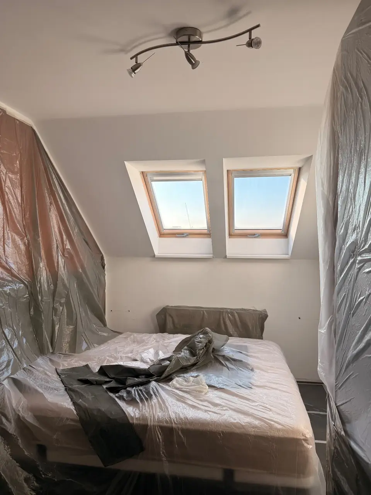
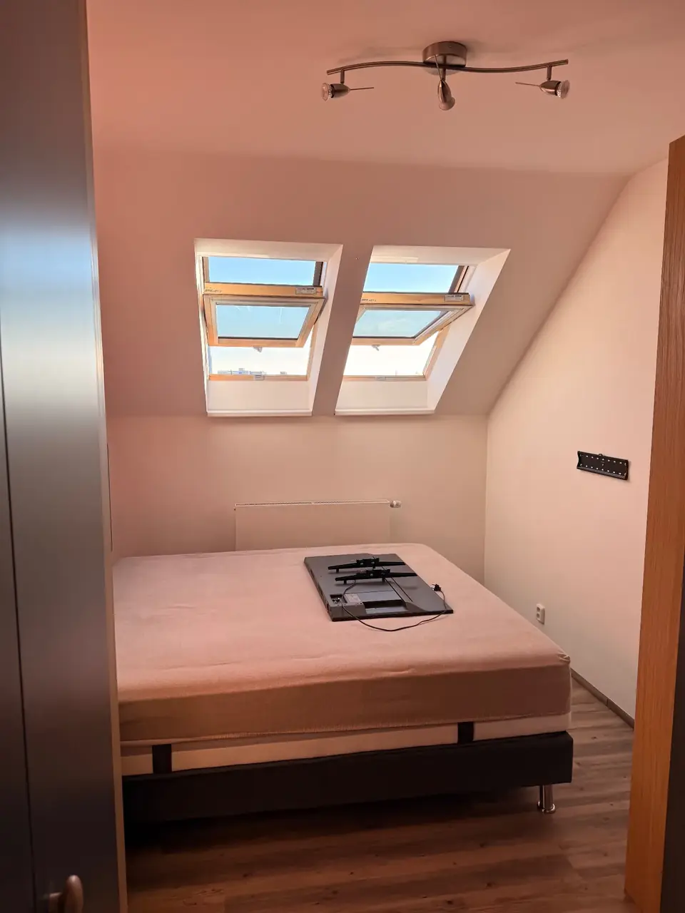
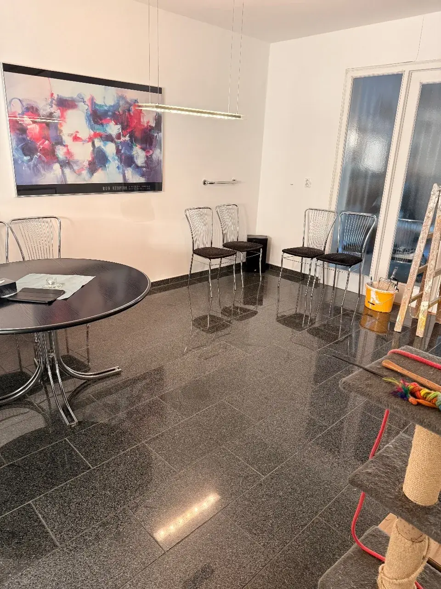
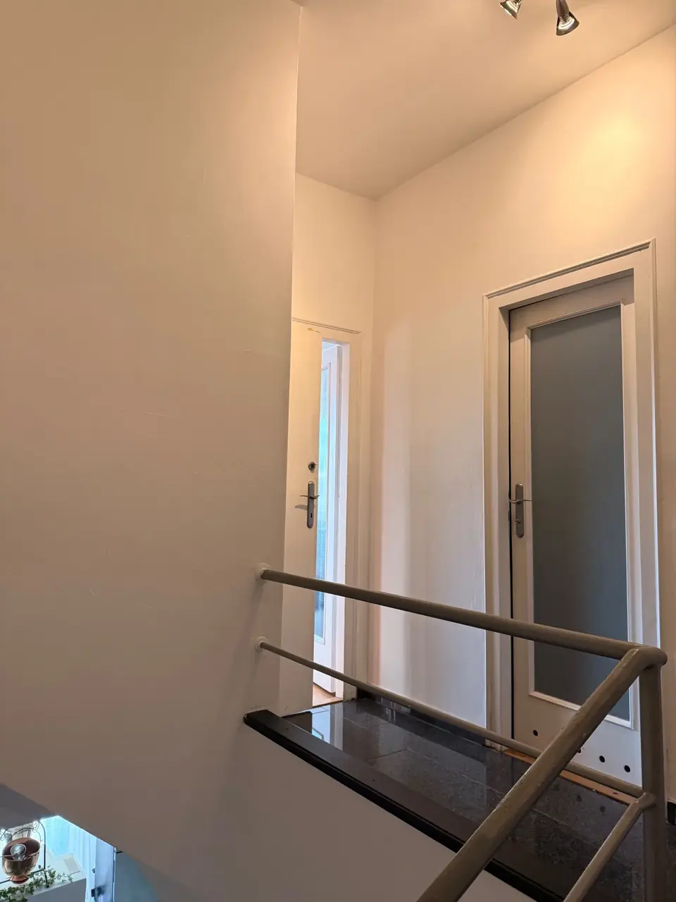
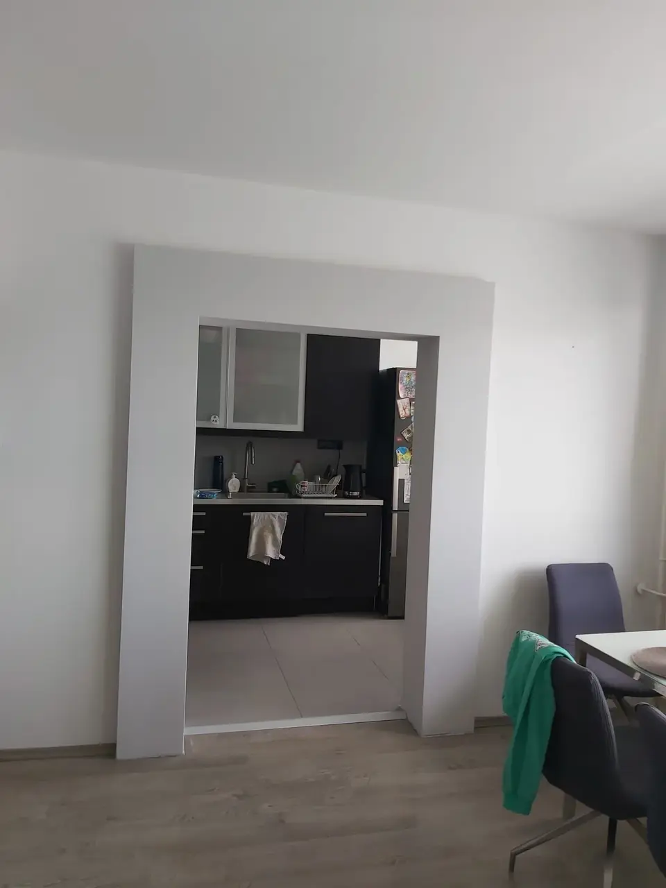
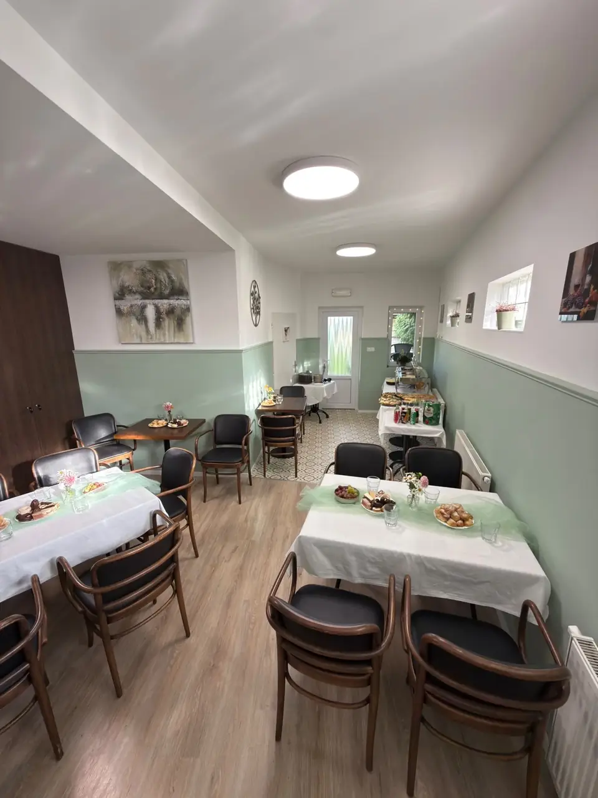
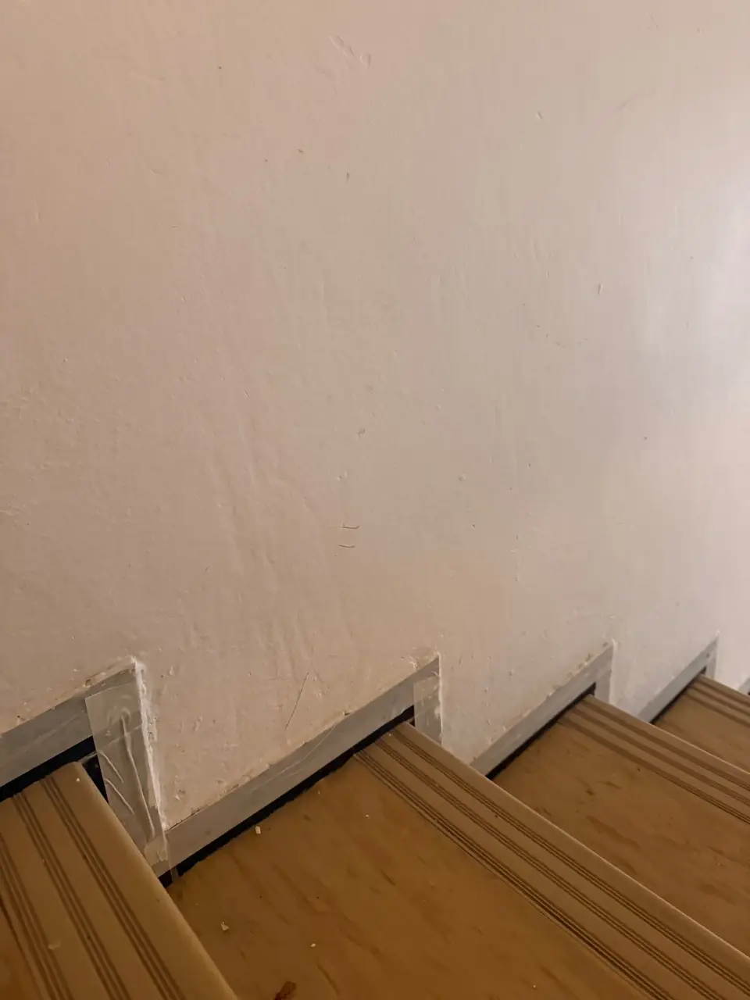
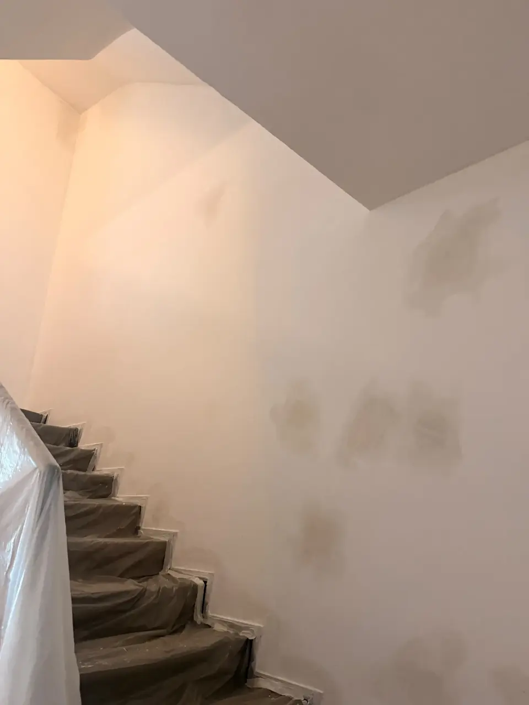
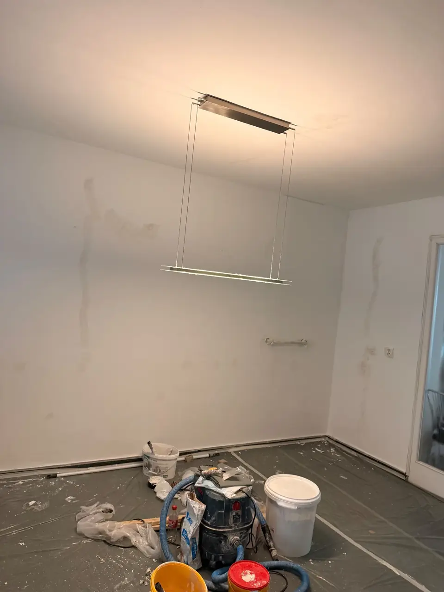
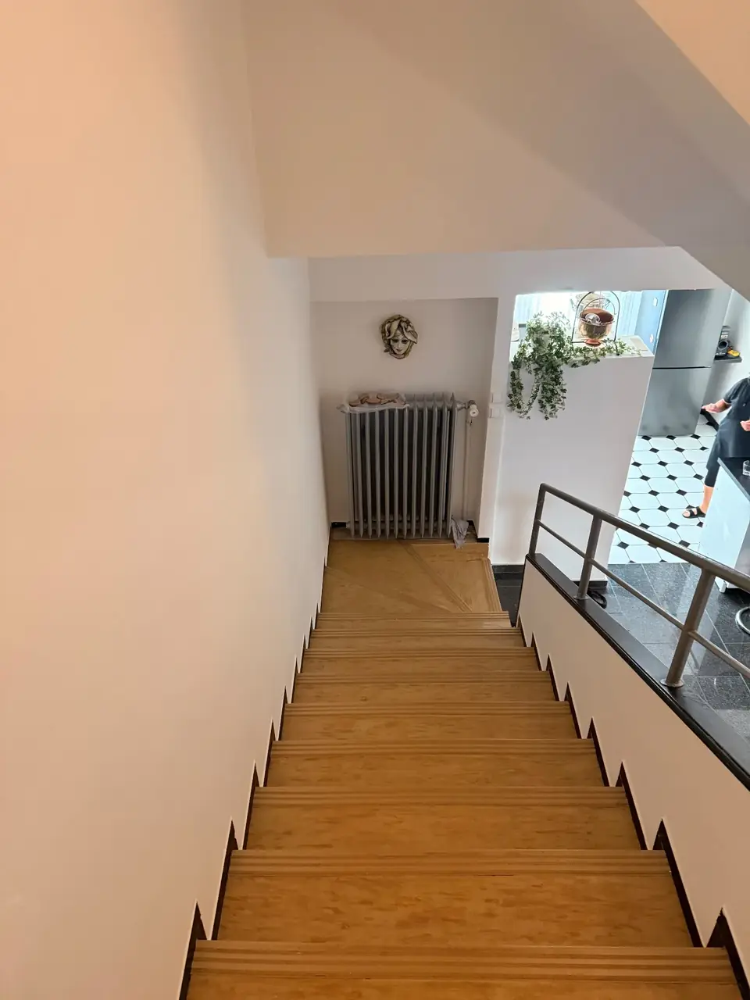

Malíř pokojů Brno
Vymalujeme pokoj, byt i dům. Nábytek a podlahy zakryjeme, praskliny opravíme a po sobě uklidíme. Byt nemusíte vyklízet.
- 5,0 z 29 recenzí na Googlu
- Ozveme se do 24 hodin
- Brno a okolí do 20 km


PředPoVýmalba pokoje · Brno · Obřany. Posuňte pásku a porovnejte stav před a po.
Byty a pokoje, které jsme malovali
Všechny fotky jsou z našich zakázek v Brně a okolí. U každé je zakázka, místo a fáze práce.





Jeden byt od zakrytí po úklid
Takhle vypadal byt v Králově Poli: skvrny po zatečení na stěnách, zakryté schody a podlahy, hotová výmalba.
Projdeme prostor
Plocha, stav stěn a představa o odstínu. Pro cenu stačí fotky a přibližné rozměry.
před prací
Zakryjeme a opravíme
Schody, podlahy a zábradlí zakryjeme. Skvrny a praskliny připravíme před malováním.
během práce
Vymalujeme
Stěnu malujeme pruh po pruhu od kraje, každý pruh shora od stropu až dolů.
během práce
Uklidíme a předáme
Hotové místnosti spolu projdeme. Fólie a páska odjedou s námi.
po práci
Co je v ceně malování
Zakrytí, opravy i úklid jsou v ceně, kterou vám předem potvrdíme. Žádné skryté položky.
- Zakrytí nábytku a podlahNábytek a celou podlahu zakryjeme papírem nebo fólií, u soklu přelepíme páskou.
- Opravy stěnPraskliny, díry po hmoždinkách a nerovnosti opravíme před malováním, aby výsledek vydržel.
- Malba stěn a stropůPostup a počet vrstev přizpůsobíme podkladu a zvolené barvě.
- Úklid a předáníPo malování uklidíme a hotové místnosti spolu projdeme.
- Barva[doplnit: je barva v ceně, nebo se účtuje zvlášť?]
- Stejní lidéKdo si s vámi malování domluví, ten ho i udělá.
Kolik stojí malování
[doplnit: od … Kč/m² práce, doplní majitel]
Stačí pár fotek a přibližné rozměry. U větší zakázky se přijedeme podívat. [doplnit: ceny s DPH, nebo bez?]
Chci nezávaznou cenu- Plocha stěn a stropůkolik metrů čtverečních se maluje
- Stav podkladupraskliny, díry a nerovnosti k opravě
- Počet vrstevpodle podkladu a změny odstínu
- Barva a výška stropůzvolená barva a jak vysoko se pracuje
Co píšou zákazníci po malování
„Perfektní rychlost domluvy i samotné realizace výmalby. Byt předán v čistém stavu, vše krásně zapravené, děkujeme.“
★★★★★ Libor Z., recenze na Googlu
Recenze přebíráme doslova, jen bez emoji. Všechny jsou na profilu firmy na Googlu.
Rád bych touto cestou poděkoval za dlouhodobě skvělé služby. Tuto firmu jsem na malování využil již několikrát a vždy jsem byl nadmíru spokojen. Kombinace profesionálního přístupu, stoprocentní kvality a velmi příznivé ceny je v dnešní době vzácná.
Musím chlapy pochválit, malovali nám celý dům a na část dělali stěrku, odvedli kvalitně a velmi zodpovědně práci. Super rychlost, pečlivost a samozřejmě si po sobě uklidili.
Profesně i lidsky skvěle odvedená práce. Všechno perfektní. Předáno čisté a poklizené. Děkuji!
Potřeboval jsem zapravit otvory v sádrokartonu a vymalovat kuchyň a koupelnu. Mile mě překvapila samostatnost, smysl pro detail i časová flexibilita.
S pány mám skvělou zkušenost. Krásně nám v rámci rekonstrukce vymalovali byt. V ložnici na naše přání udělali nádhernou malířskou stěrku. Všem doporučuji!
Tři Mistry můžu opravdu doporučit. Už od prvního kontaktu jsem měla velmi dobrý dojem a samotná realizace moje očekávání ještě předčila. Kluci byli ochotní, pečliví a nic nebyl problém. …
Kolik stojí malování bytu?
Cena závisí na ploše stěn a stropů, stavu stěn, potřebných opravách, počtu vrstev, výšce stropů a zvolené barvě. Pošlete fotky a přibližné rozměry místností a připravíme nezávaznou cenu.
Jak rychle se dozvím cenu?
Ozveme se do 24 hodin. U větších zakázek se přijedeme podívat a cenu potvrdíme po prohlídce.
Jak dlouho malování trvá?
Záleží na velikosti bytu a stavu stěn. Pokoj obvykle zvládneme během jednoho dne, u celého bytu délku práce domluvíme předem.
Kdy můžete začít?
[doplnit: obvyklá čekací doba na termín]
Musíme před malováním vyklidit byt?
Ne. Nábytek a podlahy zakryjeme podle prostoru a přístupu ke stěnám. Rozsah domluvíme předem.
Opravíte praskliny a skvrny po zatečení?
Ano. Před malováním opravíme praskliny, díry po hmoždinkách a nerovnosti. Skvrny po zatečení řešíme i jako samostatnou službu.
Malujete i kanceláře a provozovny?
Ano. Termín přizpůsobíme provozu, aby práce co nejméně omezila váš chod.
Pošlete fotky, cenu máte do 24 hodin
Nacenění je zdarma a nezávazné. Termín, který domluvíme, dodržíme.
+420 774 927 182- Střed
- Žabovřesky
- Královo Pole
- Líšeň
- Bystrc
- Bohunice
- Židenice
- Komín
- Starý Lískovec
- Modřice
- Šlapanice
- Kuřim
- Rosice
- Slavkov u Brna